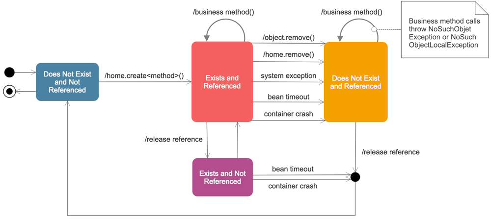
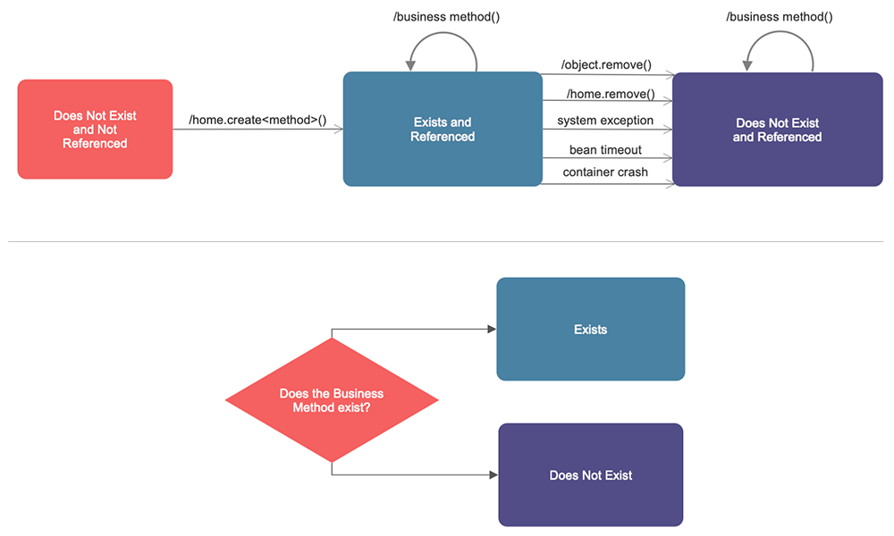
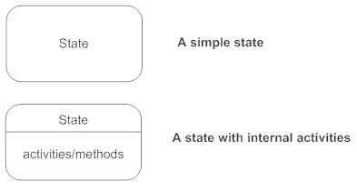
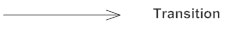
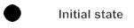
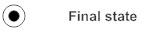
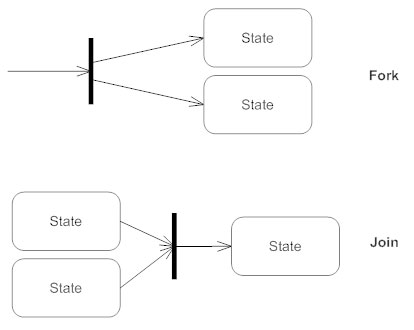

Mis on olekudiagramm?
Olekudiagramm näitab klasside käitumist vastusena välistele stiimulitele.
Täpsemalt kirjeldab olekudiagramm ühe objekti käitumist süsteemis toimuvate
sündmuste jadale reageerides.
Mõnikord nimetatakse seda ka Harel’i olekudiagrammiks või olekumasina diagrammiks.
See UML-diagramm modelleerib konkreetse objekti dünaamilist juhtimisvoogu
olekust olekusse süsteemi sees.

Olekudiagramme kasutatakse süsteemi dünaamilise vaate illustreerimiseks.
Need on eriti olulised liidese, klassi või koostöö käitumise modelleerimisel.
Olekudiagrammid rõhutavad objekti sündmustepõhist käitumist, mis on eriti
kasulik reaktiivsete süsteemide modelleerimisel.
Mis vahe on olekudiagrammil ja vooskeemil?
Vooskeem illustreerib protsesse, mis süsteemis täidetakse ja mis muudavad
objektide olekut. Olekudiagramm näitab tegelikke olekumuutusi, mitte protsesse
või käske, mis neid muutusi tekitasid.

Kuidas joonistada olekudiagrammi
Enne joonistamist leia objekti alg- ja lõppolek.
Seejärel mõtle, millistes olekutes objekt võib olla. Näiteks e-kaubanduses võib
tootel olla avaldamise või saadavaloleku olek, läbimüüdud olek, taaslaos olek,
ostukorvi lisatud olek, soovinimekirjas salvestatud olek, ostetud olek jne.
Mõned üleminekud pole teatud olekus võimalikud, näiteks ei saa toode olla
ostetud või ostukorvi lisatud olekus, kui tema eelmine olek oli läbimüüdud.
| Tähised | Sümbolid |
|---|---|
| Olekud Olekud tähistavad olukordi objekti eluea jooksul. Olekut saab illustreerida ümardatud nurkadega ristkülikuga. |
 |
| Üleminek Püsinool näitab teed erinevate objektide olekute vahel. Märgi üleminekule sündmus, mis selle käivitas, ja tegevus, mis selle tulemusel toimub. Olekul võib olla ka üleminek, mis viitab iseendale. |
 |
| Algolek Täidetud ring, millele järgneb nool, tähistab objekti algolekut. |
 |
| Lõppolek Nool, mis viitab täidetud ringile, mis asub teise ringi sees, tähistab objekti lõppolekut. |
 |
| Sünkroniseerimine ja juhtimise jagamine Lühike paks joon, kuhu siseneb kaks üleminekut, tähistab juhtimise sünkroniseerimist. Esimest joont nimetatakse haruks (fork), kus üks üleminek jaguneb mitmeks paralleelseks üleminekuks. Teist joont nimetatakse liitmiseks (join), kus paralleelsed üleminekud koonduvad taas üheks. |
 |